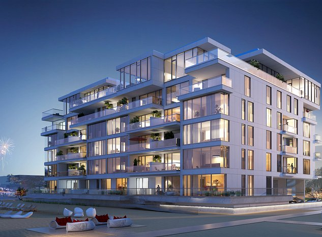
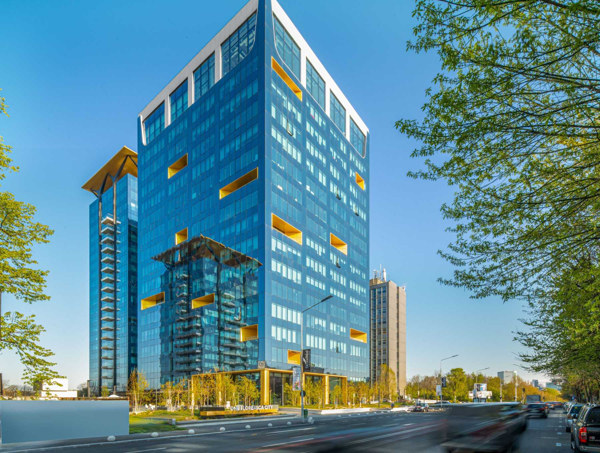
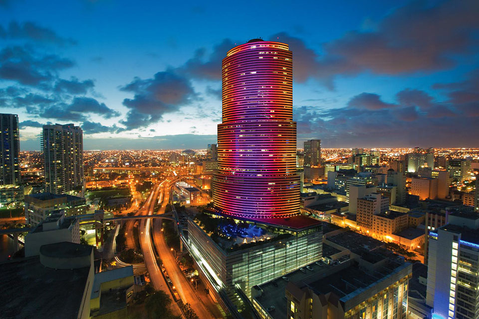
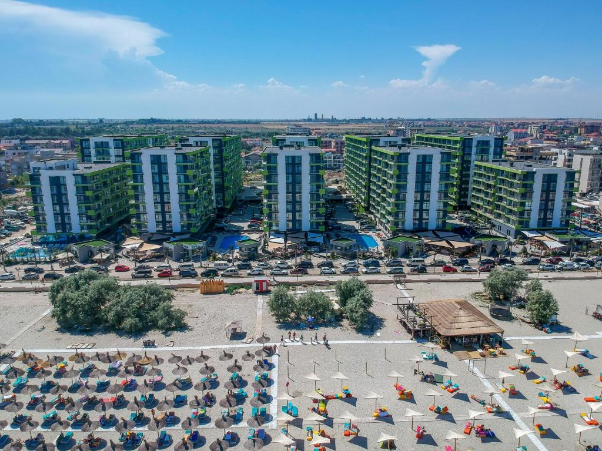
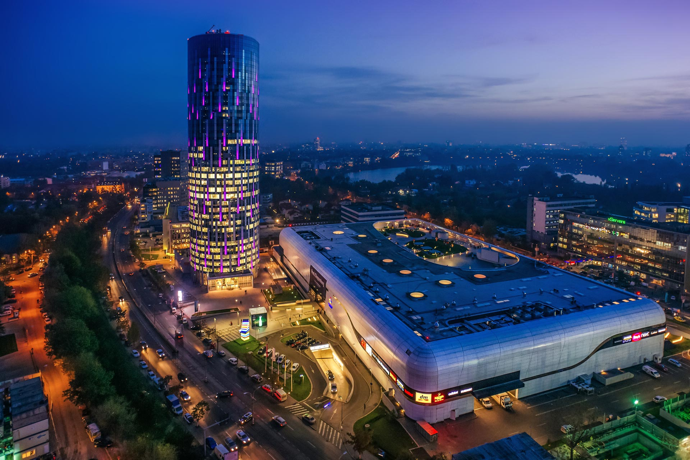
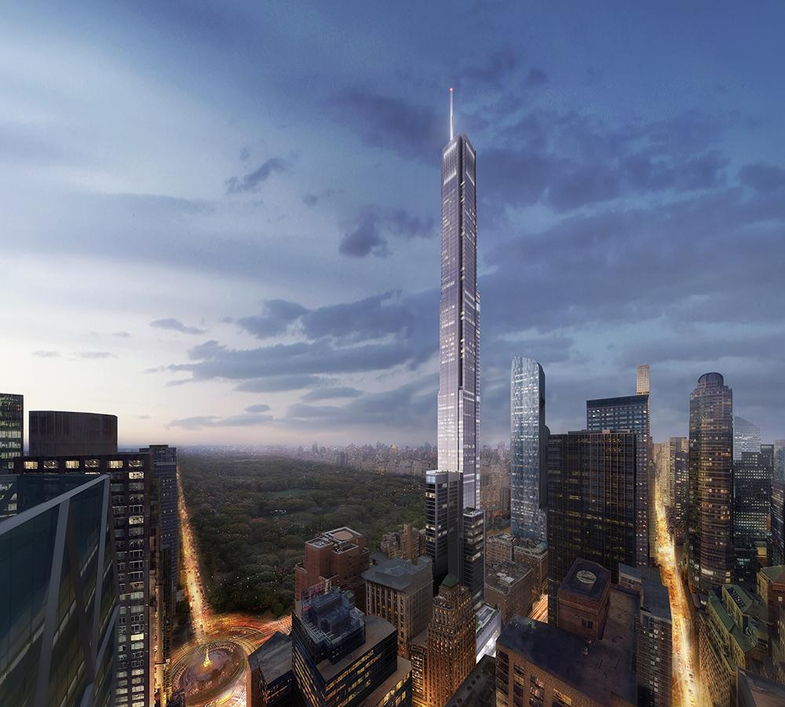
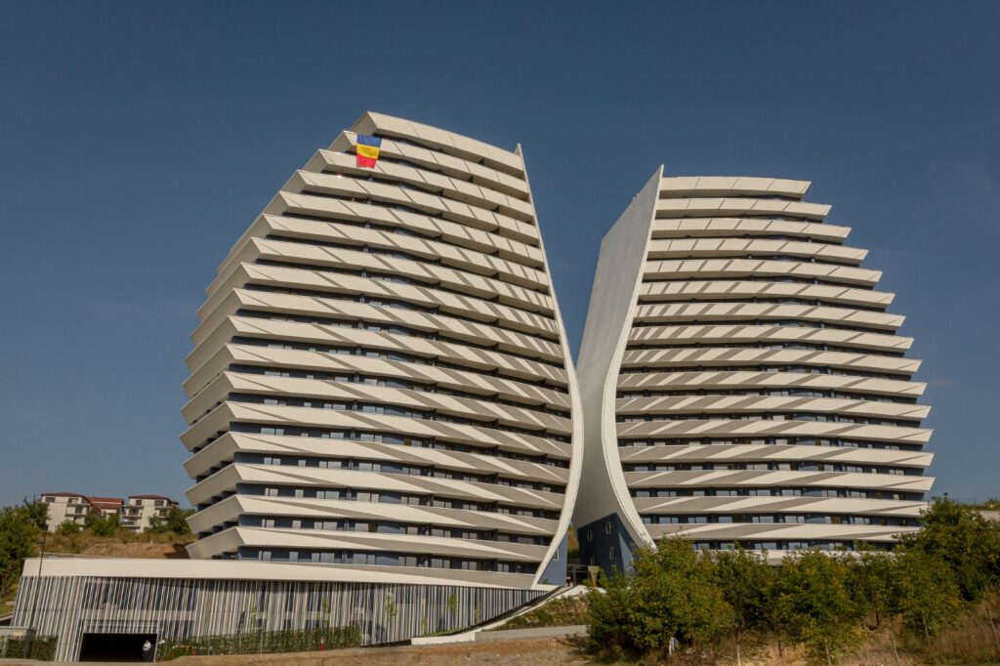
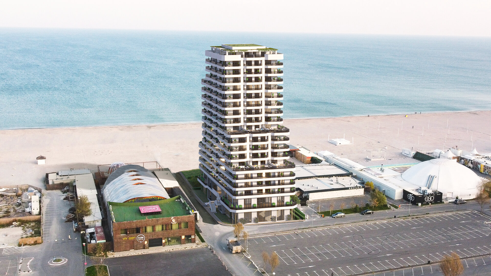

Localizat chiar la malul mării, în una dintre cele mai dorite și apreciate zone,
GREY Mamaia Nord conectează cele mai importante puncte și atracții
pentru a crea o comunitate vie, a unui stil de viață modern și creativ.
Apartamentele oferă vedere frontală sau laterală la mare și o înălțime liberă
în camere de aproximativ 3 metri, finisaje premium, piatră naturală și închideri de sticlă pe terase,
securitate și supraveghere video permanentă.Majoritatea fațadei este ventilată.
Turnul Miami este un zgârie-nori de birouri, cu 47 de etaje, din Miami, Florida, Statele Unite. Este situat
în centrul orașului.
Cele trei niveluri ale turnului îi permit să aibă mai multe scheme de culori în tribut pentru anumite
sărbători și anotimpuri.
În 2012, un sistem LED de 1,5 milioane de dolari a fost instalat pe turn pentru a permite afișaje mai
elaborate, cu un timp de tranziție mult mai rapid.

GREY Bucharest Tower este unul dintre cele 4 turnuri de 16 etaje din comunitatea Floreasca City.
GREY Bucharest Tower este o cladire de birouri de 16 etaje, cu o suprafață totală de 23.750 mp, construită
prin intermediul celor mai noi tehnologii.
Proprietatea beneficiază de o formă regulată, permițând cea mai bună utilizare a luminii naturale,
precum și o planificare eficientă a spațiului.

GREY Florida Tower este un zgârie-nori de birouri cu 47 de etaje, renumit pentru sticla exterioară și pentru
instalațiile de lumină elaborate care schimbă culoarea,
care îl fac una dintre cele mai fotografiate clădiri din orizont.
Prestigiosul turn de birouri se află în inima centrului orașului Miami și găzduiește multe dintre firmele
influente din Miami și nu numai.

Pentru o experiență de vacanță completă, complexul GREY Năvodari vă pune la dispoziție apartamente
spațioase, cu design actual, fiind cele mai confortabile.
Arhitectura este concepută astfel încât fiecare dintre cele 160 de apartamente să aibă vedere laterală la
Marea Neagră.

GREY SkyTower este mai mult decât cea mai înaltă clădire din România.
Introduce un nou concept de birou de afaceri, fiind un pionier local în stabilirea de noi standarde de
soluții inovatoare și design.
GREY SkyTower a fost construit pe un set de valori puternice care îi ghidează continuu evoluția întruchipată
de arhitectură: prestigiu, inovație, flexibilitate și securitate.
Ne mândrim cu tehnologia noastră de ultimă oră, serviciile soft smart și spațiile de lucru premium.

Turnul GREY Central Park este un zgârie-nori rezidențial foarte înalt aflat în cartierul Midtown Manhattan
din New York, de-a lungul Billionaires' Row.
Clădirea se ridică la 472,4 m cu 98 de etaje deasupra solului și trei etaje de subsol, deși etajul de sus
este numerotat 136.

Situat în zona de Vest a oraşului Cluj-Napoca, în cartierul Zorilor, complexul rezidenţial GREY WINGS este
privilegiat de o infrastructură bine pusă la punct,
precum şi de acces rapid la mijloacele de transport în comun, unităţi de învăţământ dedicate tuturor
vârstelor, cabinete medicale de ultimă generaţie şi zone comerciale importante.

Pentru tine, am conceput GREY Marina Tower. Situat între cele mai renumite cluburi din Mamaia,
acest imobil cu 15 etaje de lângă Nuba Beach Club, este inspirat de vibe-ul zonei exclusiviste de clubbing
de pe litoralul Mării Negre.
GREY Marina Tower este situat la 1 metru de plajă, între cluburile din nordul stațiunii Mamaia precum Nuba
Beach
Club, Breeze, LOFT Club, EGO Club, Fratelli Beach & Club.

 Turnul Miami este un zgârie-nori de birouri, cu 47 de etaje, din Miami, Florida, Statele Unite. Este situat
în centrul orașului.
Cele trei niveluri ale turnului îi permit să aibă mai multe scheme de culori în tribut pentru anumite
sărbători și anotimpuri.
În 2012, un sistem LED de 1,5 milioane de dolari a fost instalat pe turn pentru a permite afișaje mai
elaborate, cu un timp de tranziție mult mai rapid.
Turnul Miami este un zgârie-nori de birouri, cu 47 de etaje, din Miami, Florida, Statele Unite. Este situat
în centrul orașului.
Cele trei niveluri ale turnului îi permit să aibă mai multe scheme de culori în tribut pentru anumite
sărbători și anotimpuri.
În 2012, un sistem LED de 1,5 milioane de dolari a fost instalat pe turn pentru a permite afișaje mai
elaborate, cu un timp de tranziție mult mai rapid.